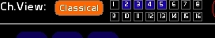
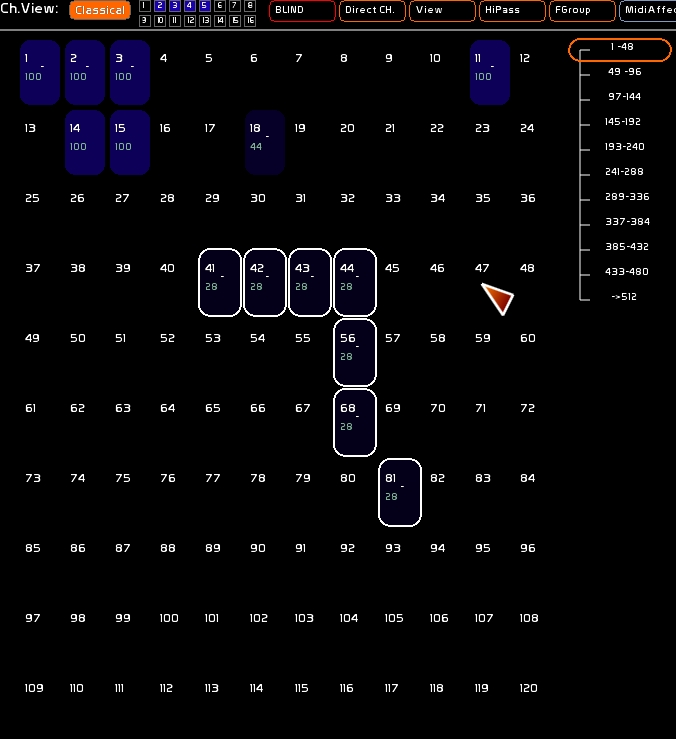
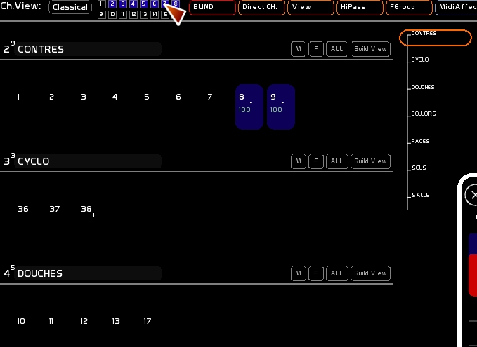

Il y a deux modes d'affichage des circuits:
Vous pouvez basculer le l'une à l'autre en utilisant le bouton [Classical] ou en activant les petits carrés représentant les 16 vues personnalisables.

La vue classique présente les 512 circuits pilotables dans WhiteCat. Vous pouvez sélectionner, déselectionner tous les circuits. Vous pouvez naviguer grâce à la poignée dans cette vue.

Les Channel Views permettent eux de construire des vues personnalisées, et de “ranger” son espace de travail circuits à son goût.
La première vue ne peut être éditée: Le Channel View 1 affiche les circuits patchés.
Les 15 autres vues peuvent être éditées, à partir :
Lorsque vous êtes en Channel View, vous ne pouvez pas sélectionner un circuit qui n'est pas dans les vues actives.
